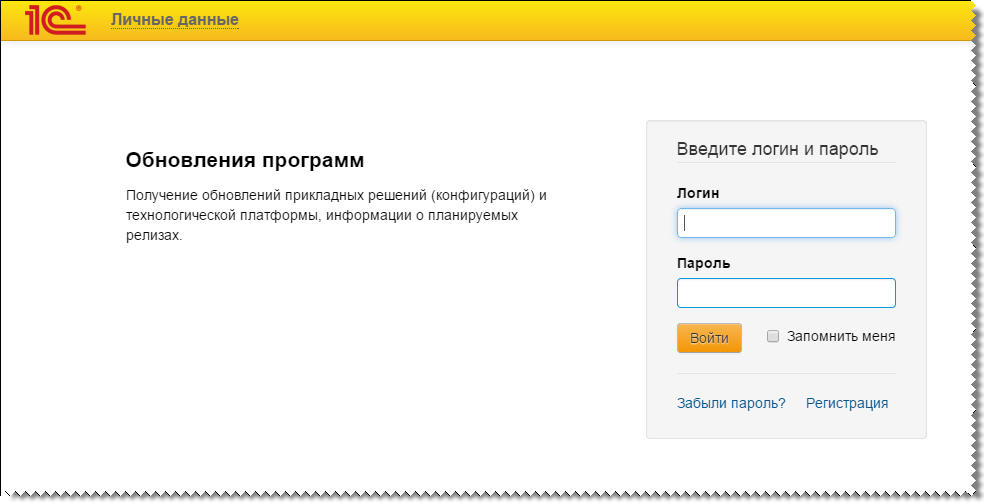
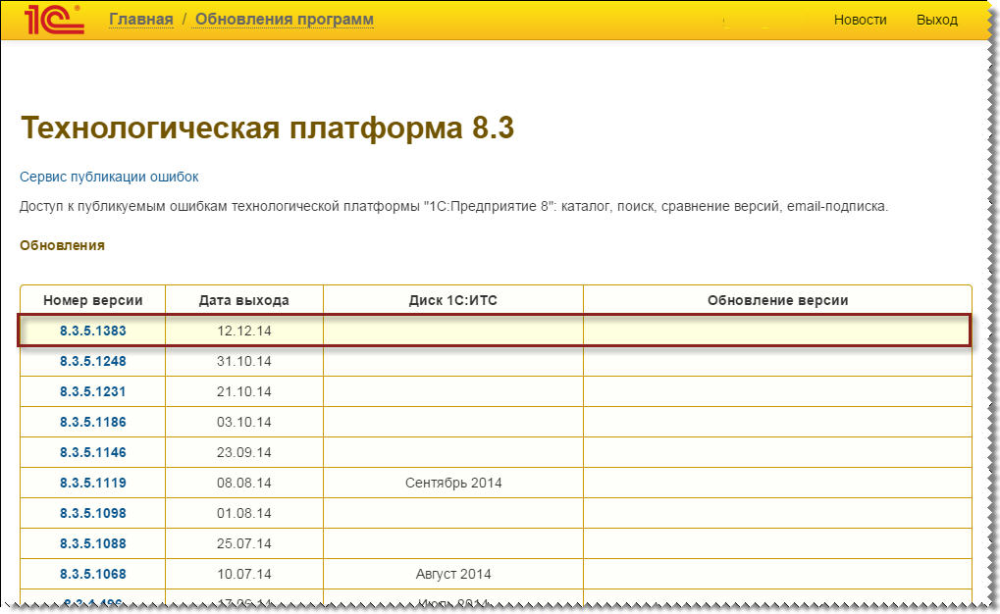
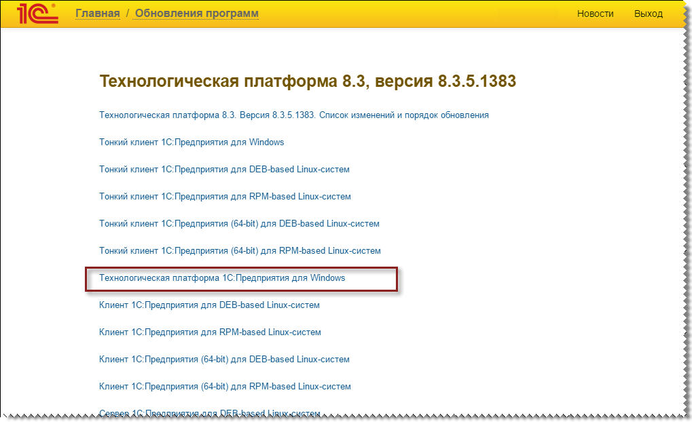
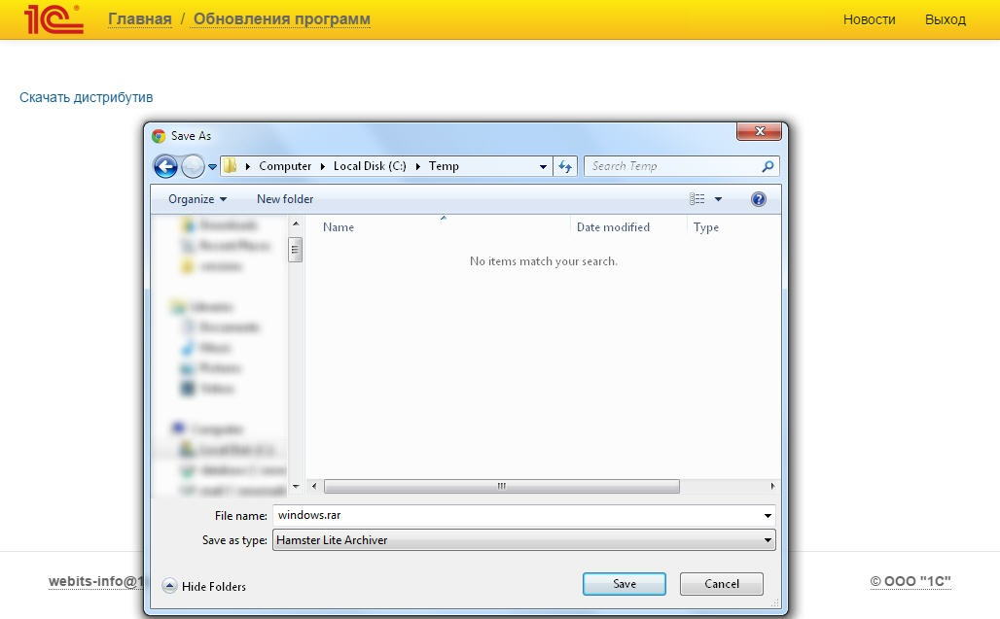
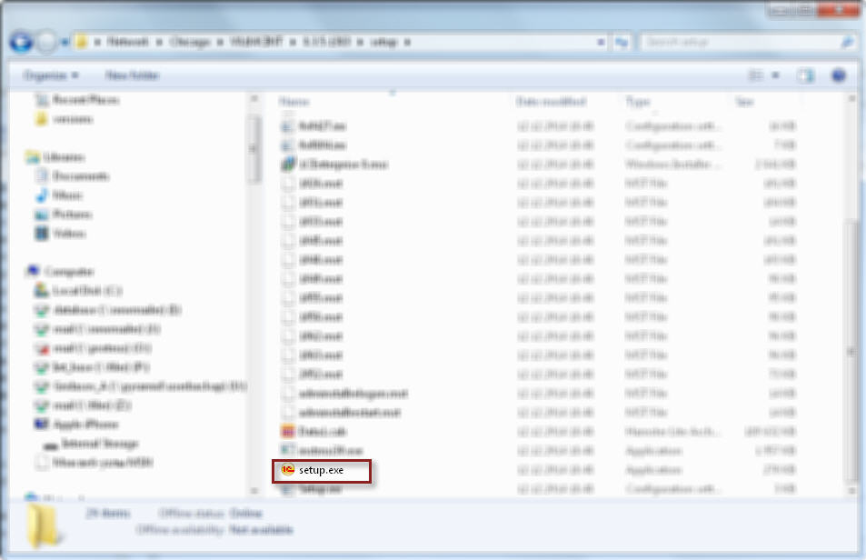
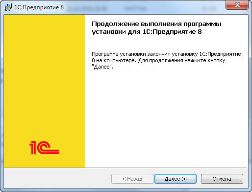
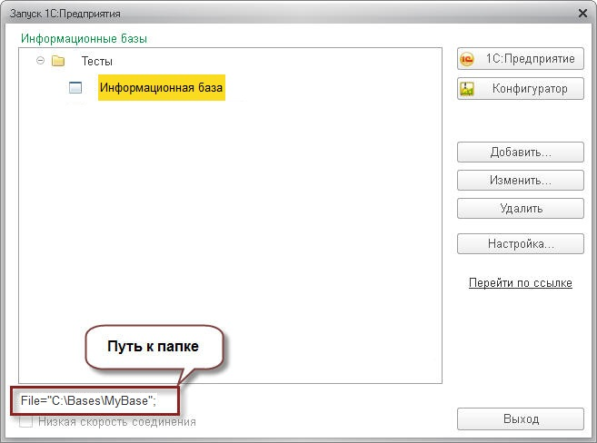
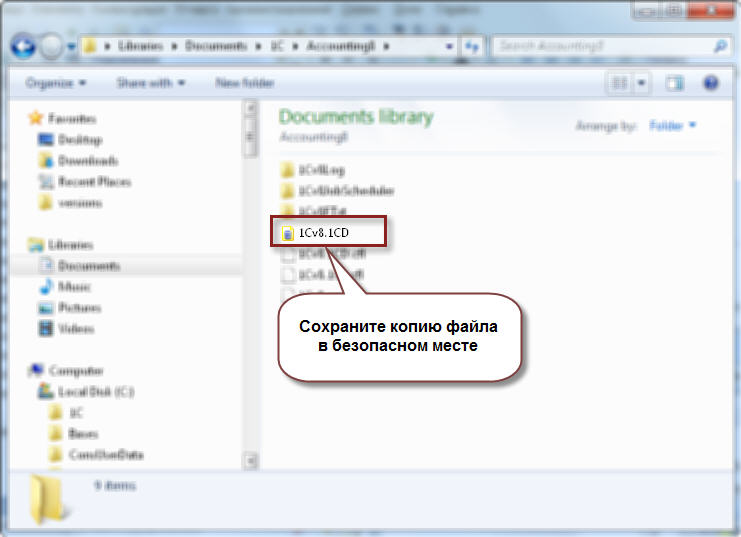

Download the latest version of the 1C:Enterprise 8.3 platform distribution package from the 1C:Software Update service on the 1C:ITS portal (portal.1c.ru). If necessary
specify username and authorization.

Next, select the most current (latest officially published) version of the technological platform

To download the file, go to "1C:Enterprise for Windows Technological Platform" section:

Then, the "Download distribution package" link will open the dialog box of saving the file to hard drive. Remember the folder where you saved it:

Note: to install the program, the Windows user must have administrator rights! Unpack the downloaded archive file. In the folder where you unpacked the archive, locate and start the Setup.exe file:

Follow the instructions of the installer:

Identify and open the directory where the desired database is located:


By clicking the button "1C:Enterprise" you can start working with the selected infobase on the new version of the platform.